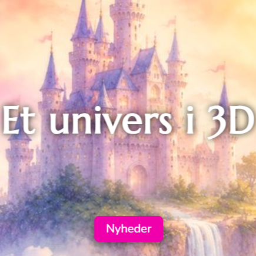

Udvalgte projekter
Her vises et udvalg af projekter, som giver indblik i min arbejdsproces, mine færdigheder og min personlige stil.
"The Best Defense" - Interaktiv Brugeroplevelse
2025
- ☆ HTML ☆
- SCSS ☆
- JavaScript ☆
- Adobe Creative Cloud ☆
'The Best Defense' er et gamificeret branching scenario bygget på JavaScript. Spillet følger vaskebjørnen Pachi, hvor spilleren hjælper med at træffe gode beslutninger om cybersikkerhed.
Arbejdsproces
Jeg arbejdede gennem hele forløbet med at kombinere kode, illustrationer og animation heraf i en iterativ proces. Her ses eksempelvis min illustration af vaskebjørnen Pachi, skilt ad i individuelle bevægelige kropsdele til animation.
Færdigt produkt
Det endelige produkt er et funktionelt, interaktivt branching scenarie, som kan spilles direkte i browseren - prøv det!
Se det fulde produkt her!
Sassiecat3d - Real Life case

2026
- ☆ WordPress ☆
- CMS ☆
- CSS ☆
- HTML ☆
- Adobe Photoshop ☆
Sassiecat3d er en mindre dansk virksomhed med speciale i design og print af 3D-figurer. I denne case arbejdede min studiegruppe og jeg på at skabe en indbydende og funktionel webshop via WordPress, som afspejlede Sassiecat3d's unikke univers.
Arbejdsproces
For at kunne udvikle en webshop, der afspejler Sassiecat3D’s vision, USP og målsætninger, har vi gennem et tæt samarbejde med virksomheden opnået indsigt i deres arbejdsprocesser, produktudvikling og værdier. Derudover har vi gennem desk research undersøgt fantasy-universet, virksomhedens konkurrenter samt det målgruppe- og markedssegment, som produkterne henvender sig til. Denne indsigt har dannet grundlag for vores videre arbejde med at udvikle en webshop, der både understøtter virksomhedens identitet og imødekommer målgruppens behov.
Færdigt produkt
Med fokus på storytelling, autenticitet og brugervenlighed har vi udviklet en platform, der ikke blot fremhæver virksomhedens produkter, men også formidler historien og værdierne bag det danske, familiedrevne firma.
Se det fulde produkt her!